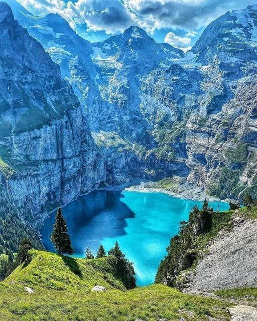
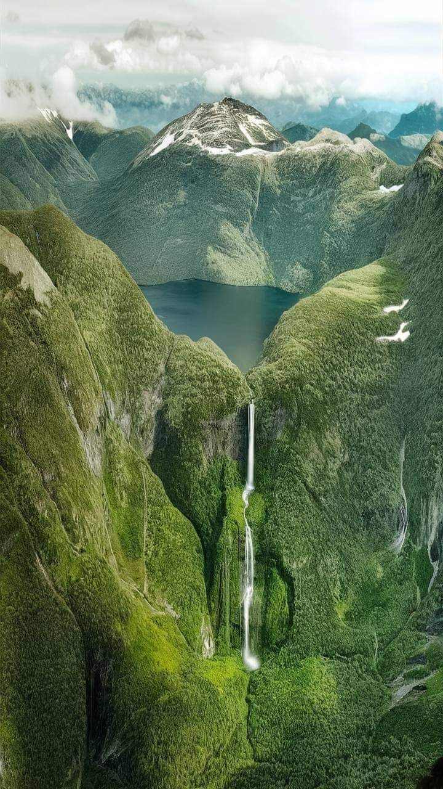

Welcome to Europa
The Alpes: The longest mountain range in Europe which extends up to 8 countries. Striking for their beauty, ideal for hiking and mountaineering with more than 100 million visitors each year. The Alps are an inhospitable area. However different flora and fauna They settled here and adapted to survive their cold environment.

Welcome to Europa
New Zeland: a tourist destination dreamed of by many people famous for its glaciers, fjords and large snow-capped mountains The landscapes of this country go beyond imagination from peaks full of ice to large golden beaches. This place gained fame thanks to the film 'The Lord of the Rings' standing out for its beautiful background views.

Welcome to Europa
Iceland: Spectacular waterfalls, huge glaciers, breathtaking volcanic panoramas All these views and natural wonders within a small island. Places like Geysir the most famous geyser in the world, and Gullfos, one of the best-known waterfalls in the country. which has three different waterfalls. A lake surrounded by a volvanic panorama Lake Myvatn and don't forget the Icelandic sky with its beautiful Northern Lights, appearing in August and ending in April.